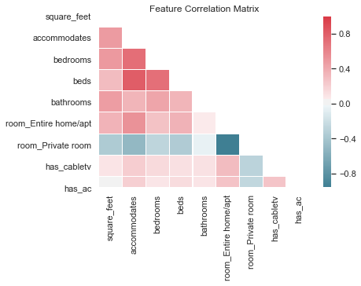

About the Data
An Airbnb dataset of listings in Boston was selected for this exploratory analysis. The data is simply a slice in time, all with a listing data of September 7th, 2016. At a high level, the data contains the following information:
- Descriptive information about the listing, including an ID, name, summary, and its location
- Information related to the host such as their name, ID, and acceptance rate
- Property data including the number of bedrooms, bathrooms, room type, and square footage
- Pricing details like the nightly rate, required security deposit, cleaning fee, or longer-term rates
- Listing reviews in aggregate and in subcategories like cleanliness or location
Data Quality
Correctness
To the best of our knowledge, we believe that the data used in this analysis is correct. Much of the data itself came originally from AirBnB, but some fields were added when before being uploaded to Kaggle. In our exploration of the data, we found the data to be accurate; for example, we were able to tell from visual inspection that the neighborhoods were assigned appropriately in relation to the coordinates of the listing. Additionally, below is a feature correlation matrix we performed prior to modeling.

The correlation matrix (only a small subset of features is shown) follows our intuition about the data. Homes with more bedrooms tend to have more bathrooms and can accommodate more people, and we can see that these features are positively correlated. Private rooms on the other hand, are negatively correlated with many of the other features which is also expected.
Currency
The currency of the data is less than ideal. All of the listings come from a snapshot in time on the date of September 7th, 2016. Ideally, we would be using real-time information about listings, but this such data is simply unavailable to the public.
Completeness
The data was less than perfect from a completeness standpoint. While the original dataset had 3,585 listings, very few actually contained all information for each field. Square footage, for example, was quite uncommon and had to be removed as a feature. After building out our features, we elected to remove listings with missing values since we didn't feel it would be appropriate to replace them with averages or some other measure. Our final data-set contained just shy of 2,000 listings. While the overall completeness of the data was not great, the data in our final set is complete.
Consistency
We found the data itself to be consistent overall. During our data exploration phase, we didn't notice oddities such as spelling errors or multiple representations of the same thing. Additionally, it does not appear that there are multiple sources of the data which would provide for opportunities for the data to become inconsistent.
References
Original Data: https://www.kaggle.com/airbnb/boston#listings.csv
Homepage Boston Picture: https://www.visittheusa.com/experience/savor-foodie-weekend-boston-massachusetts